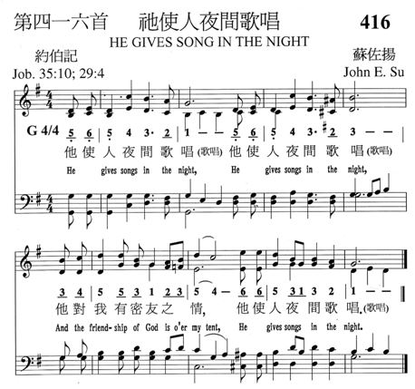
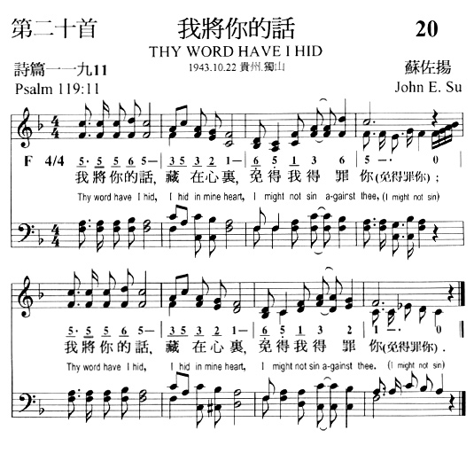
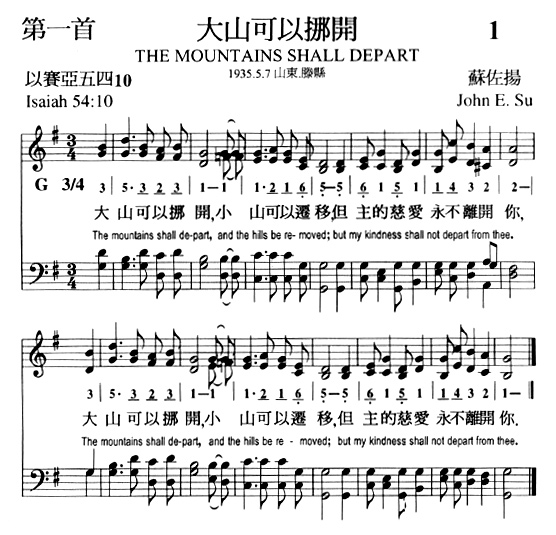

1632 祂使人夜間歌唱 He Gives Song in the Night
|
|
祂使人夜間歌唱，
祂使人夜間歌唱，
祂對我有密友之情，
祂使人夜間歌唱。 |
|
|
 |
|
|
http://www.hymncompanions.org/Nov/04/stream.php
祂使人夜間歌唱
He Gives Song in the Night
祂使人夜間歌唱，
祂使人夜間歌唱，
祂對我有密友之情，
祂使人夜間歌唱。
 (請點耳機收聽)
(請點耳機收聽)
這是蘇佐揚牧師（John E. Su, 見八月二日）根據以上經節所作的一首短歌。
蘇牧師是第三代基督徒，十六歲時在宋尚節博士主領的培靈會中奉獻，十八歲進華北神學院讀神學，廿二歲開始在中國各地自由傳道，三十歲在甘肅被按立為牧師。
1953年冬，蘇牧師開始在海外自由佈道。 除對中國人講道外，並向三十多種其他民族傳福音。 他憑信心靠主供養一家七口的生活。 他對基督徒的訓勉如下：
一. 時時認罪，追求聖潔。
二. 每日讀經，遵守主道。
三. 凡事祈禱，尋求主旨。
四. 每週最少為主做一次聖工 。
五. 學習每月納十分之一給主。
六. 每天與家人做家庭禮拜。
七. 每年計劃帶領別人歸主。
八. 每家奉獻一兒作聖工。
1958年蘇牧師在台灣環島佈道時，接獲父親病危的家書，他因尚有四個月的行程，未能即時返回；不久他父親被主接去，他也不克奔喪。 在哀慟的心情下，他寫了「天色豈能常藍」(
The Sky Is Not Always Blue)表達他對人生無常的感受；但主的恩典足夠他用，主的言語撫慰他心靈，使他重新得力，為主奔走前路。 這首歌作于台灣南投，歌詞如下：
天色豈能常藍，明朗清爽，黑雲有時滿佈，暗淡無光；
大雨傾盆降下，心覺淒涼，只是高天太陽，並未兩樣。
玫瑰豈能久開，香氣滿園？青草豈能常旺，永不衰殘？
人情冷暖無常，容易變臉，我主古今如一，不改慈顏。
世路豈盡平坦，不見高山？海洋平靜安穩，毫無波瀾？
有時疲倦灰心，重重困難，我主日日同行，賜我平安。
世事滄海桑田，變幻無常，親友死別生離，我心悲傷；
希望變為失望，碎肝斷腸，我主受苦更多，何必喪膽？
（副歌）
主最能體諒，加我力量，祂常安慰我，使我剛強，
前途雖困難，主在身旁，祂愛我到底，地久天長。
(請點耳機收聽)
中英文聖詩集參考
英文歌名 He
Gives Song in the Night
天人聖歌 174
http://www.hymncompanions.org/Aug/02/stream.php
大山可以挪開
The Mountains Shall Depart
大山可以挪開，
小山可以遷移，
但主的慈愛永不離開你。
(請點耳機收聽)
這首短歌是蘇佐揚牧師引用以賽亞書54:10的經文譜成的。
蘇佐揚牧師（John Su, 1916 - 2007）原藉廣東，出生在香港。
他十一歲開始學口琴，十二歲學彈風琴，兩年之內熟背二百多首聖詩曲譜後，開始學作曲，其後又學會了十餘種中西樂器。當年宋尚節，趙君影等名牧佈道會時，常請他司琴或領唱。他立志要將音樂的恩賜為主所用，除短歌外，尚作有天人聖詩二百二十首。
他用聖經經文譜寫了許多短歌，約有五百首，其中最著名的是「壓傷的蘆葦」（A Bruised
Reed），它使許多在痛苦試煉中的基督徒得安慰與鼓勵，其歌詞如下：
「壓傷的蘆葦，祂不折斷，（太12:20）
將殘的燈火，祂不吹滅；（賽42:3）
耶穌肯體恤，祂是恩主，（來4:15）
祂愛我到底，創始成終。（約13:1，來12:2）」
(請點耳機收聽)
蘇牧師於1937年畢業於山東華北神學院，自1937-1948年間在中國十九省奔馳為主作工，經歷許多困難，但從不灰心。
1948年終返香港，先後在香港、澳門兩地牧會、教學四年。
1953年春，他辭去了受薪的職務，開始過信心的生活，準備去海外為主作工，當時他親友都為他擔心「一家七口何以養生」？ 神賜給他兩句話：【紅海面前自有路，約但河邊不需橋】，神的話永遠有效。
1953-1961年間，他足跡遍日本、菲律賓、新幾內亞、澳州、星馬、泰國、越南、印尼等地。 1962-1976年間，他在歐美四十六個國家及地區向華人佈道。
他有語言天份，能用英文、國語、廣東話，閩南語、潮州話、客語及滬語講道。此外他也懂十多種歐亞語言。 他的座右銘是「祇對主忠心，不問人褒貶」。
在蘇牧師所作的兩百多首詩歌中，「主啊我深愛你」，「仰望救主」「主啊我心愛你」，「主愛改變我」等都是大家愛唱的詩歌。
仰望救主
Looking to Jesus
世上沒有一處是安居之所，都是叫人懼怕灰心難過，
世上沒有一處是安居之所，只有仰望救主耶穌度過。
世上沒有一處是安居之所，四面黑暗無人肯來幫助，
世上沒有一處是安居之所，苦海風波使人心靈痛苦。
世上沒有一處是安居之所，世界引誘使人心靈冷落，
世上沒有一處是安居之所，魔鬼掌權使人犯罪作惡。
世上沒有一處是安居之所，我的家鄉是在天父那�堙A
世上沒有一處是安居之所，只有仰望救主忍耐到底。
（副歌）
仰望救主，祂必施恩時常看顧，
請問世上那有一處是安居之所？
只有仰望耶穌渡過。
(請點耳機收聽)
蘇牧師雖已於2007年安息主懷，但他所創設的「基督教環球佈道會」仍不間斷的繼續為主發光，為主所用。其網址為 http://www.weml.org.hk/。
中英文聖詩集參考
英文歌名 The
Mountains Shall Depart
天人聖歌 39
教會聖詩 324
校園詩歌I 164
英文歌名 Looking
to Jesus
天人聖歌 7
https://www.vinemedia.org/article/voice-of-heavenly-people/he-gives-song-in-the-night/
「祂使人夜間歌唱」
(約伯記三十五章10節;
廿九4;使徒行傳十六章25-34節)
約在半夜，保羅和西拉禱告唱詩贊美神 (徒十六25)
基督徒往往會在夜間歌唱，詩人曾這樣說：「我想起我夜間的歌曲」(詩七十七6)；又說：「我半夜必起來稱謝你」(詩一一九62)。智慧人以利戶瞭解神甚深，他說：「祂使人夜間歌唱」(伯三十五10)。
如果我們活出主基督的樣式，心靈�堳K充滿愉快的樂章。有一次，聖詩作家何佐治先生去參加他幾位朋友所舉行的音樂會，大家快樂一聚。在途中，他看見一位農人的大車被爛泥所吸住，便去幫他的忙。他繼續趕程時，時間已不許可他將身上滿有泥積的衣服更換。他匆忙的抵達朋友的家後，朋友們都嘆息地說：「進來罷，不過你已經聽不到所有的音樂了」。那位詩人微笑著說道：「是的，不過今天晚上，我已經得到夜間的音樂。」
有些人忠誠事主，有些人在苦難中�琱[忍耐，他們都獲得主所賜心�堛熙葝�爲報酬。正如保羅和西拉一樣，雖然他們被困獄中，手脚上了木狗及鐵煉，但他們在靜寂的黑夜�堙A心靈充滿喜樂，因爲他們瞭解自己崇高的呼召和榮耀的將來，他們把詩篇背誦出來，高聲贊美主。可能保羅唱高音，西拉唱低音，二部合唱，聲震監獄。
有時我們會遭遇憂傷與痛苦，但我們同樣的可以在夜間歌唱，無論我們爲主犧牲或是在敵對的環境中，均能堅穩地站立而得到快樂，如果能在夜間歌唱，那是多麽奇妙的行動阿！
夜間的歌聲，是主所賜贈，
聖靈保惠師，安慰我心靈；
環境雖黑暗，祂放射光明，
我可以發出，夜間的歌聲。
https://www.vinemedia.org/category/article/voice-of-heavenly-people/
天人之聲
https://baike.baidu.com/item/%E8%8B%8F%E4%BD%90%E6%89%AC
-
在中国基督教音乐史上，蘇佐扬
牧师占了一个十分重要的席位。
-
中文名
-
苏佐扬
-
国 籍
-
中国
-
民 族
-
汉
-
出生日期
-
1916年5月22日
-
逝世日期
-
2007年9月27日
-
出生地
-
香港九龙上海街
-
性 别
-
男
蘇佐扬牧师於1916年5月22日在
香港九龙上海街出生，祖籍广东省阳江县。他是第三代基督徒，自少在教会中成长，父母热心於教会事工，外祖父是广东省阳江县城
中华基督教会的长老戴以信先生。蘇牧师六岁起随长兄蘇天佑先生到九龙便以利教会参加主日学和其他聚会。他自少喜爱音乐和文学，十二岁开始学风琴，能弹熟二百多首福音圣诗。他十四岁开始作曲，曾把所作的三首圣诗及布道文章投稿《爱群杂志》，受到当时杂志社长宋经伯先生的赏识和激励，决定日後从事文字及圣诗创作。

1931年，我国著名基督教布道家宋尚节博士 (1901 -
1944)初次来港布道，在九龙便以利的礼拜堂主持培灵布道会。蘇牧师在这次布道会中决定终身传道，事奉上主。
1934年，他北上到山东省滕县华北神学院接受神学教育。1937年夏毕业後，冒著战争的危险，独自坐火车北上到察哈尔张家口参加宋尚节博士主持的布道会，其後於山西乡村城镇的教会主领查经会及灵修会。半年後，他乘火车南下返回香港，结束第一次国内布道之旅。1940年，他被邀请返回母校协助编译希伯来文字典及教授音乐。1941年，他获杨绍唐牧师(1900-1966)邀请往天津的灵工团教导女学生希伯来文，同年与陈振虔女士在天津结婚。婚後，夫妇一同回到香港，在伯利神学院任教圣经，结束了第二次国内布道之旅。
1942年，日军占领香港。他偕妻子往福建避难，在福建漳州小溪创立了《天人报》，开始了文字布道。翌年，他前往贵州省伯特利神学院任教，在该处为苗族基督徒创办了大花苗文的《福音杂志》。1944年，他获何赓诗博士邀请北上重庆，在中国灵修神学院任教，与贾玉铭牧师(1880-1964)同工半年。1945年夏，他远赴西北，出任「甘宁青基督教联合会」的总干事，负责在西北一带巡视教会，推进各种联合事工。1947年6月，他在甘肃省被按立为牧师。其後偕同妻女回到上海，为内地会开拓文字布道工作，负责编著及译述单张、小册子和书籍等文字事工。1948年他回港，结束了第三次国内布道之旅。
蘇牧师通晓英语及五种中国方言，并能弹奏多种乐器。除了对华人基督徒讲道外，他也曾为三十多个民族传福音，令多人蒙恩。1953年冬，他放弃稳定的受薪工作，开始从事海外布道的信心宣教生活，直至1961年，先後展开八年远东布道之旅，前往日本、星马、新畿内亚、澳洲、菲律宾、北婆罗洲、砂拉越、泰国、越南、韩国及印尼等十三个国家布道，以不同的方言向华侨讲道，更对日、韩、菲、印尼、泰、越、缅、澳洲、澳洲、新畿内亚等多个民族宣讲福音，将世界各国作为布道会工场，并鼓励各民族的信徒出国传福音。
1962年，他展开环球报道之旅，身经六大洲共五十多个国家，进一步扩张其布道的彊界。他踏足欧洲，用英语对欧洲人讲道，并应欧洲多个差会的邀请，主持奋兴布道会。同年8月，他飞往纽约，在美加多个教会、神学院、大学、中国留学生查经团契，向华侨及美国人讲道。
1976年，他从美洲回港，担任环球布道会会长一职，并创办基督教天人社，担任社长，出版书籍50多种。他曾出版一系列有关圣经新旧约的神学丛书，以文字向全球读者布道，当中包括一至十集的《圣经难题》、一至八集《默想新约》、四集《原文解经》、《经外作品》、《默想旧约
- 创、出、利民、申》、《旧约精研1-3集》、《诗篇综读1-3集》等，被黄锡木博士认为是首位把典外文献翻译成中文的华人牧师。
他於1942年在福建创办的《天人报》，於1961年在香港易名为《天人之声》。该刊由最初只是一份小报，发展成为全国性的刊物，至今更成为世界性的季刊，供50多个国家的人免费阅读，六十多年来造就了世界各地华人信徒的灵性，实为近代中国华人基督教刊物本色化及自立发展的亮丽典范。
蘇牧师是我国二十世纪中文圣诗的重要编写者，创作了《天人短歌》600馀首及《天人圣歌》200馀首，许多歌曲已被译成多国文字，为人所喜爱诵唱。踏入老年，他较少往海外布道，惟於1994年9月22日，仍应非洲埃及自由卫理公会的邀请，到埃及布道43日。他鼓励埃及人组织「埃及海外布道会」，差遣宣教士往全球各地传福音。他晚年虽然双眼患上白内障，仍勤於笔耕，继续主编《天人之声》、出版新书及创作圣诗，以文字向全球读者布道。
蘇牧师有一子四女、一内孙、八外孙及一外曾孙。虽然在儿女成长的日子，他经常在外国布道，但他每天逐一提名为他们祷告，又以书信用真理提醒他们要按圣经的教训待人处事。他有一本代祷簿，每天为各地读者祷告。
蘇牧师於2007年5月仍伏案写稿，30日突然晕倒家中，被送往医院接受治疗，6月22日出院转往护老院接受照顾。他其後进出两次医院，每次均接受几天治疗，9月15日再进医院，於9月27日晚9时50分，面容安详地安息主怀。
蘇佐扬牧师一生忠心事主，荣神益人。安息礼拜於2007年10月20日上午假红磡世界殡仪馆举行，本校校长、老师及学生会代表一同出席，同表悼念。
(以上蘇佐扬牧师的生平史略，主要摘自香港浸会大学历史系2004年谢诗咏同学毕业论文《二十世纪华人布道家蘇佐扬牧师》。)
[1]
https://www.pooituncc.org/grow/main/heavenlypeople.html

https://www.youtube.com/channel/UCMEho584MfRV1kg946qNR8A/videos
天人社環球佈道會
https://www.youtube.com/watch?v=rtxlEivTzlQ&list=PLHZxZqSwfXQ-whl-ea1Ob3dZg8UOyiA2W
天人聖詩 蘇佐揚牧師


